Hirošima a Nagasaki
První použití jaderné zbraně.
Otevřít
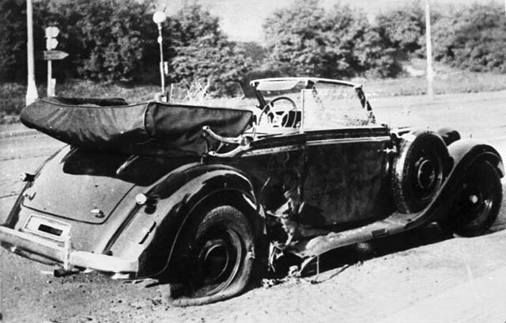
Operace Anthropoid
Atentát na Reinharda Heydricha.
Otevřít
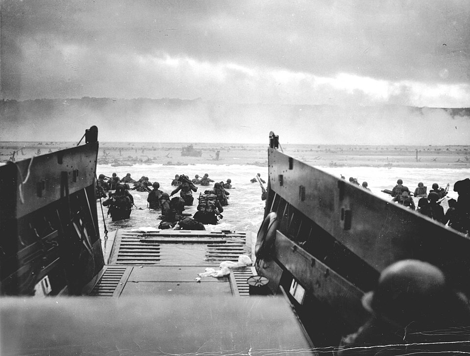
Vylodění v Normandii
Den D a začátek osvobozování Evropy.
Otevřít
Nicholas Winton
Zachránce židovských dětí.
Otevřít
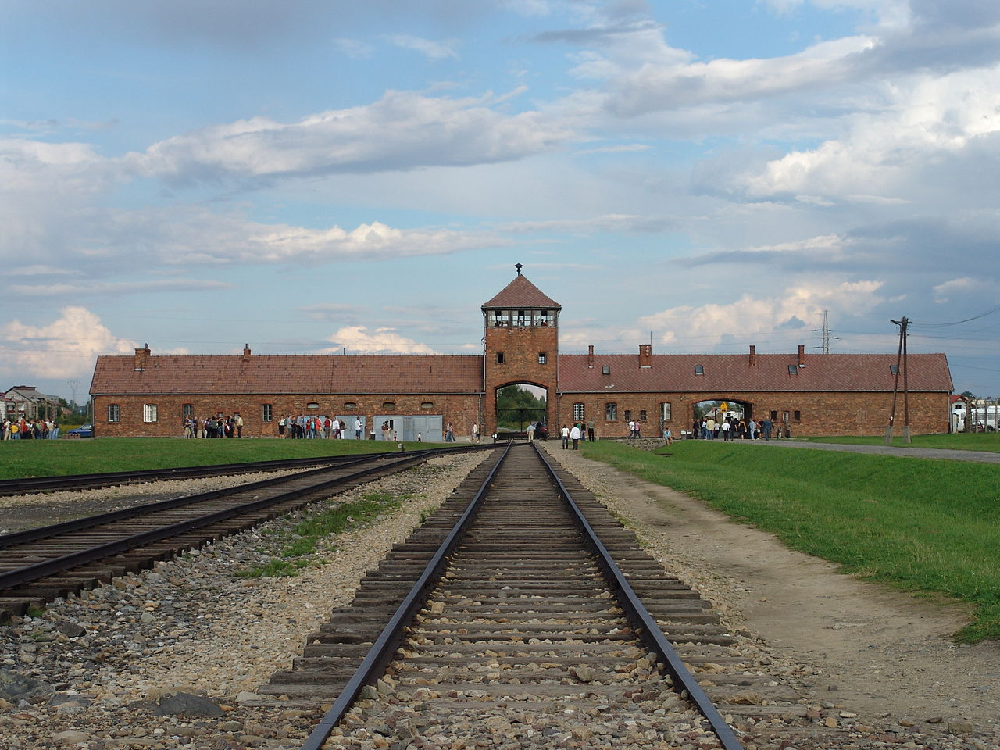
Osvětim
Největší nacistický vyhlazovací tábor.
Otevřít
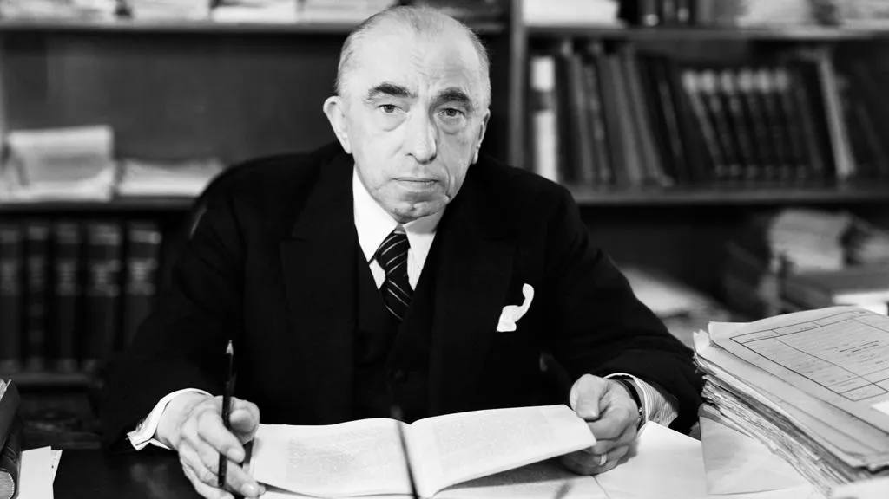
Emil Hácha
Prezident v těžkých časech okupace.
Otevřít
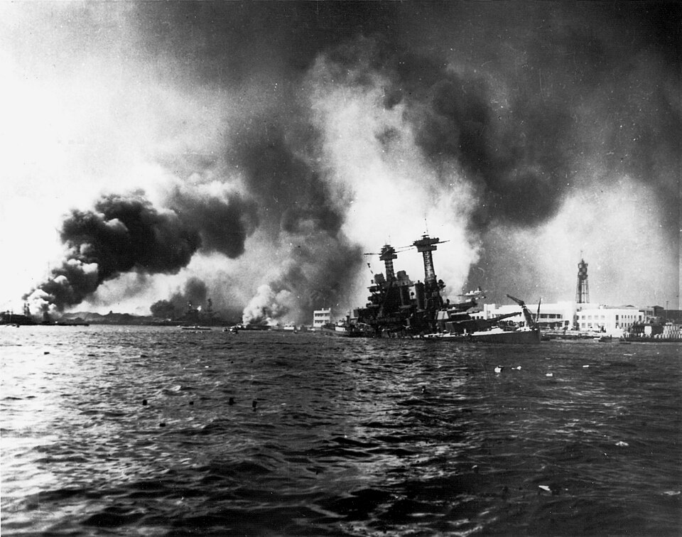
Útok na Pearl Harbor
Vstup USA do války.
Otevřít
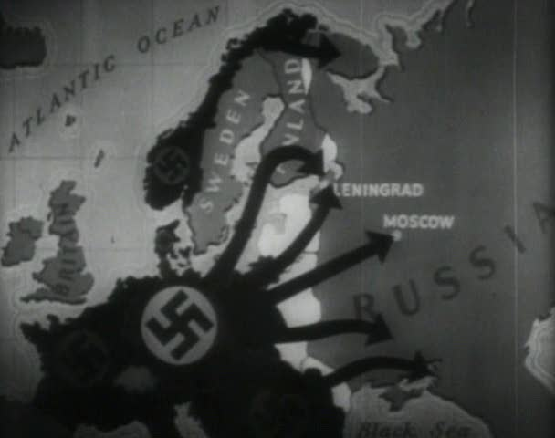
Operace Barbarossa
Německá invaze do Sovětského svazu.
Otevřít
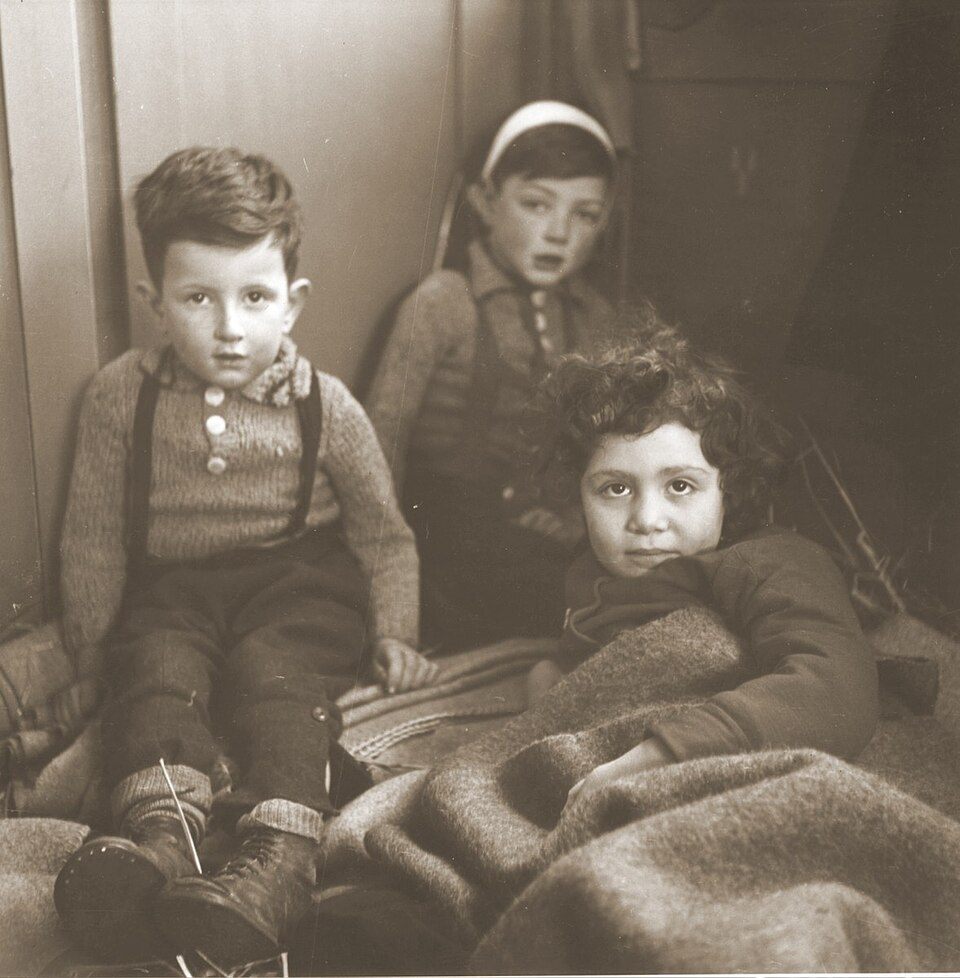
Život dětí v Terezíně
Umění a naděje v ghettu.
Otevřít
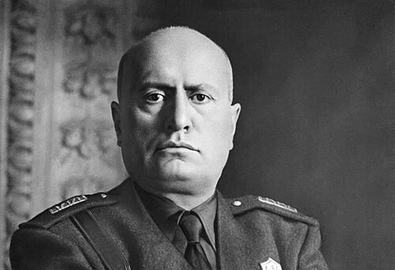
Benito Mussolini
Italský diktátor a spojenec Hitlera.
Otevřít
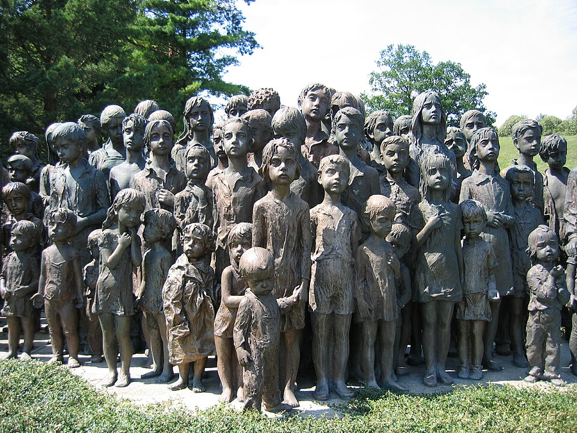
Heydrichiáda
Následky atentátu na Heydricha.
Otevřít
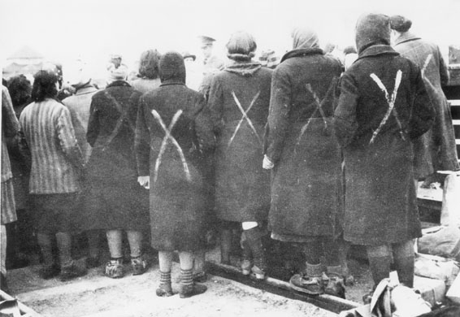
Koncentrační tábor Ravensbrück
Tábor pro ženy a jeho tragický osud.
Otevřít
Winston Churchill
Britský premiér a symbol odporu.
Otevřít
Irena Sendlerová
Zachránila stovky dětí z ghetta.
Otevřít
Hirohito
Císař Japonska během války.
Otevřít
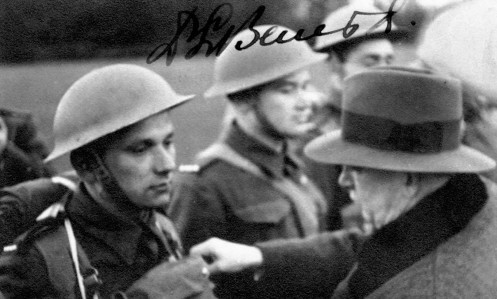
Josef Gabčík / Jan Kubiš
Hrdinové operace Anthropoid.
Otevřít
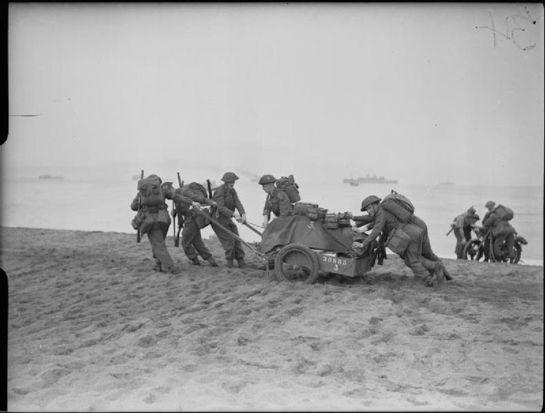
Operace v Severní Africe
Boj o kontrolu nad severní Afrikou.
Otevřít
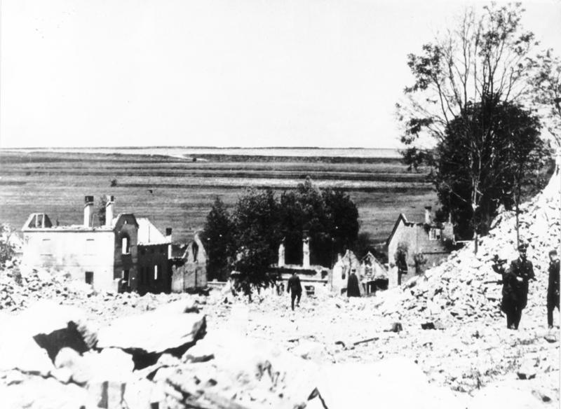
Lidice – obec, která zmizela
Vyhlazení obce po atentátu na Heydricha.
Otevřít
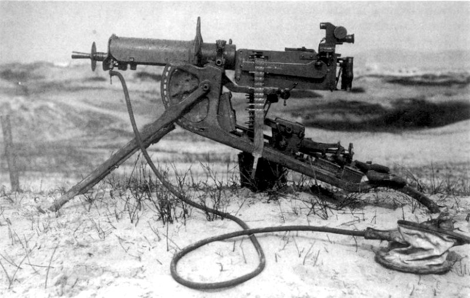
Zbrojení celého světa
Rostoucí militarizace před a během války.
Otevřít
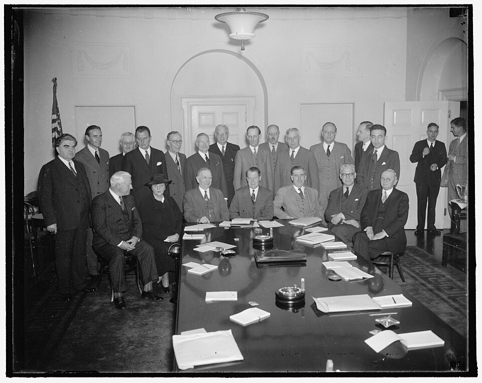
Vznik OSN
Snaha o mír a spolupráci po válce.
Otevřít
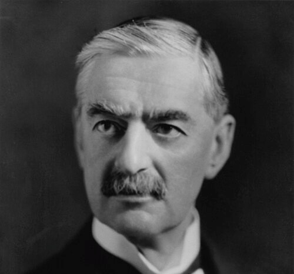
Neville Chamberlain
Britský premiér známý politikou appeasementu.
Otevřít

Vylodění v Itálii
Spojenecký postup přes Apeninský poloostrov.
Otevřít
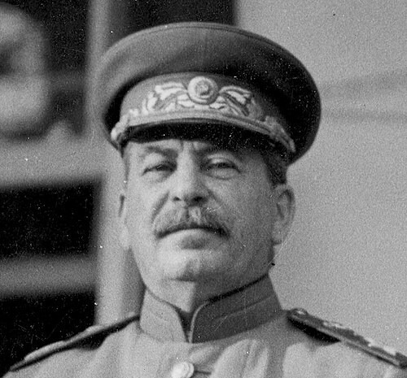
Josif Stalin
Sovětský vůdce a jeho role ve válce.
Otevřít
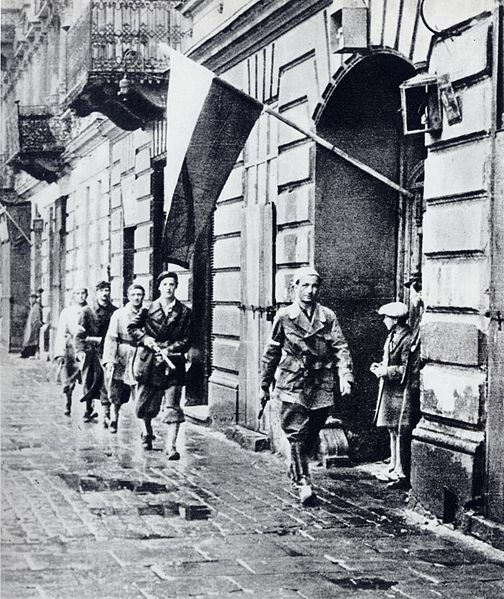
Varšavské povstání 1944
Tragická kapitola polského odporu.
Otevřít
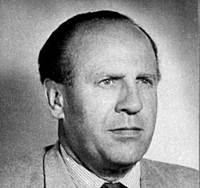
Oskar Schindler
Zachránil stovky Židů před smrtí.
Otevřít
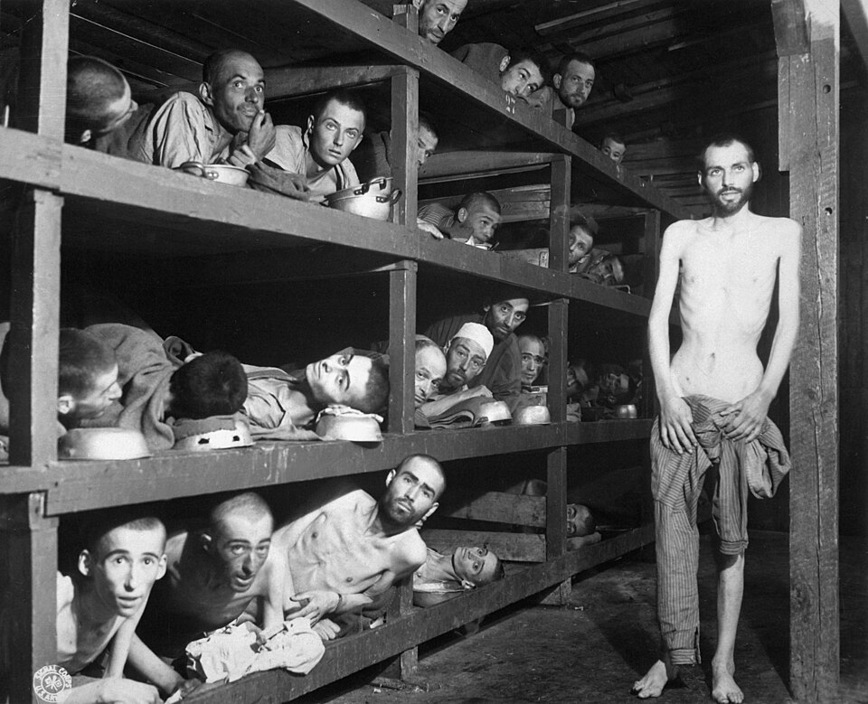
Holokaust
Systémové vyvražďování Židů a dalších skupin.
Otevřít
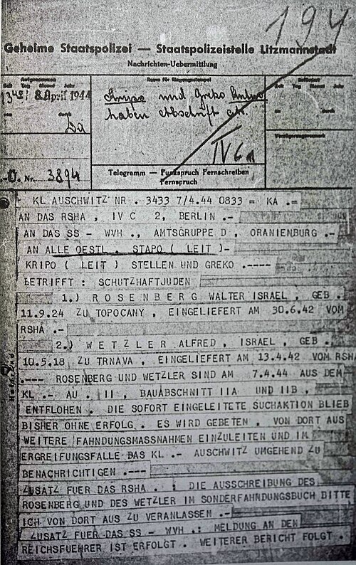
Rudolf Vrba a útěk z Osvětimi
Jeden z mála, kterým se podařil útěk z Osvětimi.
Otevřít
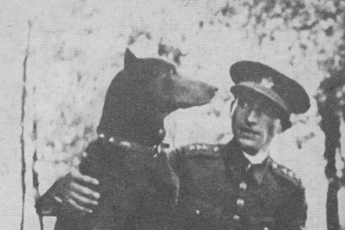
Příběh Václava Morávka
Legendární odbojář, člen „Tří králů“.
Otevřít
Anna Franková
Život v úkrytu a její deník.
Otevřít